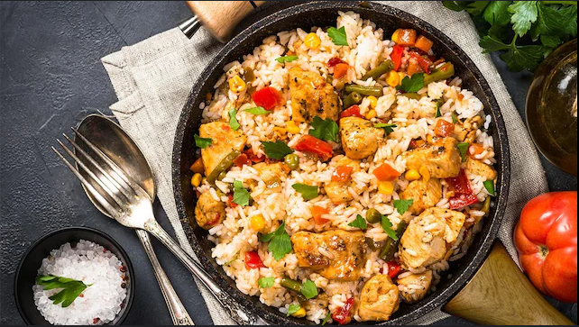

Arroz con Pollo

Descripción
El arroz con pollo es un clásico de la gastronomía Colombiana. No solo porque no hay dos ingredientes que combinen mejor que el pollo y el arroz, Este plato suele ser sinónimo de reunión, crear una reunión familiar y compartir historias juntos con el auténtico sabor de Colombia.
Ingredientes
- 3 cucharadas de aceite
- pimiento rojo grande
- pimiento amarillo
- 2 tazas de arroz blanco
- pechugas de pollo
- cubito de caldo de pollo
- sal al gusto
Instrucciones
- Calienta el aceite en una olla grande a fuego lento. Agrega los pimientos, el ajo y la cebolla. Cocina y revuelve hasta que estén dorados.
- Agrega el arroz; revuelve para mezclar.
- Agrega todos los ingredientes restantes; remueve. Cocina a fuego medio unos 15 minutos o hasta que se absorba el líquido.
- Una vez que el arroz haya absorbido toda el agua, tapa y cocina a fuego lento durante 10 a 15 minutos hasta que el arroz esté tierno.